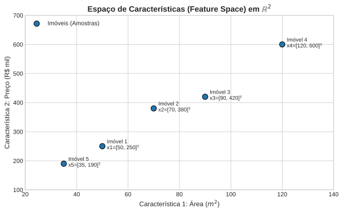
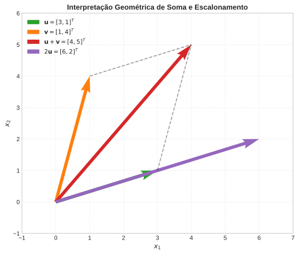
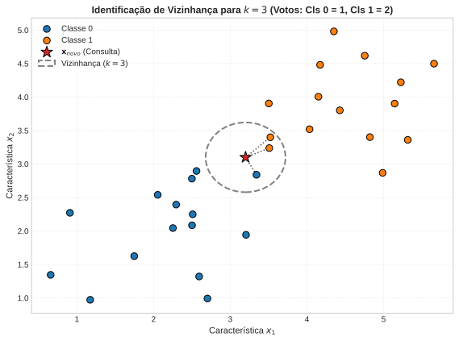
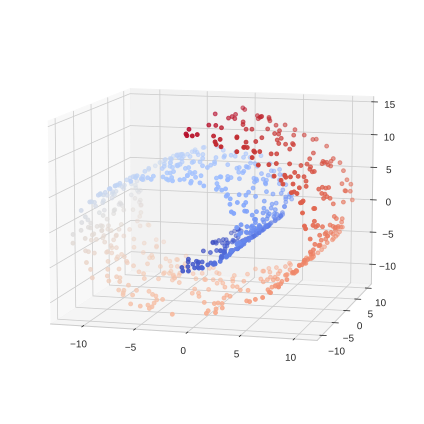
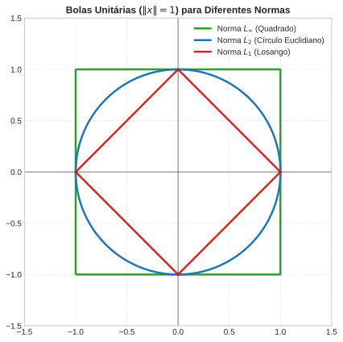
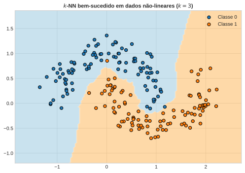

Aula 1: Espaços Vetoriais, Normas e Métricas
Álgebra Linear e Otimização para Aprendizado de Máquina
1 Escalares, Vetores e a Máquina
1.1 Roteiro da Aula
Esta é a primeira aula do curso, e o alicerce de tudo que vem depois: PCA, otimização, redes neurais — todos operam sobre a mesma representação numérica dos dados que construímos aqui. Quatro perguntas guiam o percurso:
- Como transformar um objeto do mundo real (uma imagem, um paciente, um texto) em algo sobre o qual se possa fazer aritmética — e o que isso compra (o algoritmo do \(k\)-NN)?
- Que estrutura matemática realmente descreve onde os dados “vivem”: um espaço vetorial plano, ou algo mais geral (uma variedade)?
- Como definir rigorosamente “tamanho” (norma) e “distância” (métrica) de um vetor — e o que quebra nessas definições em alta dimensão?
- Onde essa teoria toda aparece, hoje, numa aplicação real?
1.2 Contexto Teórico e Motivação
Sistemas computacionais não compreendem conceitos abstratos do mundo real como “cor da pele”, “sentimento de um texto”, “transação financeira suspeita” ou “música suave”. Para que um algoritmo de Aprendizado de Máquina (Machine Learning - ML) processe informações, o mundo real precisa ser quantificado e mapeado em representações numéricas estruturadas.
Cada atributo medido de um objeto do mundo real é chamado de característica (feature). Quando agrupamos \(d\) características quantitativas de uma mesma observação em uma ordenação específica, formamos um vetor de características (feature vector).
- Imagens: Uma imagem em escala de cinza de tamanho \(28 \times 28\) pixels é traduzida em um vetor de \(784\) dimensões (\(28 \times 28 = 784\)), onde cada componente é um escalar representando a intensidade de brilho do pixel (\([0, 255]\) ou \([0.0, 1.0]\)).
- Dados Tabulares (Saúde/Crédito): Um paciente pode ser representado pelo vetor de atributos \(\mathbf{x} = [\text{idade}, \text{pressão arterial}, \text{glicose}, \text{IMC}]^T \in \mathbb{R}^4\).
- Dados Categóricos: Nem todo atributo é numérico por natureza. A cor de um produto, o bairro de um imóvel, o tipo de contrato de um cliente — nenhum desses tem uma ordem numérica natural. A codificação padrão é o one-hot encoding: cada categoria possível vira sua própria coordenada binária. A cor de um carro entre \(\{\text{vermelho}, \text{azul}, \text{verde}\}\) vira um vetor em \(\mathbb{R}^3\): vermelho \(= [1,0,0]^T\), azul \(= [0,1,0]^T\), verde \(= [0,0,1]^T\). Atribuir números arbitrários diretamente (vermelho\(=1\), azul\(=2\), verde\(=3\)) introduziria uma falsa noção de ordem e de distância entre categorias que não existe no fenômeno real — “verde” não é “o dobro” de “azul”.
- Texto (Processamento de Linguagem Natural): Em abordagens clássicas (Bag of Words), um documento é um vetor onde cada posição corresponde à frequência de uma palavra específica de um vocabulário. Em redes modernas, é representado por um embedding contínuo em \(\mathbb{R}^{768}\) ou \(\mathbb{R}^{1536}\).
1.3 Definições Matemáticas Fundamentais
1.3.1 Escalares e Vetores
Um escalar é um elemento do corpo dos números reais, denotado por \(c \in \mathbb{R}\). Representa magnitudes puras sem direção associada (ex: temperatura, idade, taxa de aprendizado).
Um vetor de dimensão \(d\) (ou \(d\)-vetor) é uma tupla ordenada de \(d\) números reais. Convenciona-se rigorosamente no contexto de ML e Álgebra Linear que todo vetor padrão é um vetor-coluna:
\[\mathbf{x} = \begin{bmatrix} x_1 \\ x_2 \\ \vdots \\ x_d \end{bmatrix} \in \mathbb{R}^d\]
Seu transposto, \(\mathbf{x}^T = [x_1, x_2, \dots, x_d]\), é um vetor-linha em \(\mathbb{R}^{1 \times d}\). O componente \(x_i \in \mathbb{R}\) denota a \(i\)-ésima característica (feature) da observação \(\mathbf{x}\).
1.3.2 Operações Elementares de Vetores
Adição de Vetores (Composição de Sinais): Dados \(\mathbf{u}, \mathbf{v} \in \mathbb{R}^d\), a soma é realizada componente a componente: \[\mathbf{u} + \mathbf{v} = \begin{bmatrix} u_1 + v_1 \\ u_2 + v_2 \\ \vdots \\ u_d + v_d \end{bmatrix}\] Interpretação em ML: Acúmulo ou superposição de efeitos/deslocamentos no espaço de características.
Multiplicação por Escalar (Escalonamento/Modulação): Dado um escalar \(\alpha \in \mathbb{R}\) e um vetor \(\mathbf{v} \in \mathbb{R}^d\): \[\alpha \mathbf{v} = \begin{bmatrix} \alpha v_1 \\ \alpha v_2 \\ \vdots \\ \alpha v_d \end{bmatrix}\] Interpretação em ML: Redimensionamento de importância, ajuste de amplitude de sinal ou passo de atualização em algoritmos de otimização (ex: learning rate \(\eta \cdot \nabla f\)).
1.4 Representação Visual: O Espaço de Características
Quando organizamos dados tabulares, cada linha do dataset é representada como um ponto isolado no espaço de características \(d\)-dimensional (\(\mathbb{R}^d\)).
Abaixo, carregamos uma amostra real do California Housing Dataset (via Hugging Face Hub) para visualizar graficamente a transição de um dataset tabular de imóveis para pontos geométricos no espaço \(\mathbb{R}^2\) (renda mediana do bairro vs. valor mediano do imóvel). Cada ponto representa um grupo de setores censitários da Califórnia (não um imóvel individual) — uma simplificação comum ao usar este dataset, mas que vale deixar explícita.
1.5 Geometria das Operações Vetoriais em \(\mathbb{R}^2\)
A soma e a multiplicação por escalar possuem interpretações geométricas intuitivas e cruciais para a compreensão da movimentação e transformação de dados no espaço:
- Soma (\(\mathbf{u} + \mathbf{v}\)): Regra do paralelogramo. Representa o deslocamento consecutivo no espaço de atributos.
- Multiplicação (\(\alpha \mathbf{u}\)): Mantém a direção do vetor (se \(\alpha > 0\)), alterando apenas seu comprimento (ou invertendo o sentido se \(\alpha < 0\)).

DicaSe dois pontos estão próximos no espaço de características, seus rótulos são necessariamente parecidos? Que suposição isso exige?
Escreva sua resposta em uma frase, e compare com um colega (2 min).
2 Problema de Aprendizado e k-NN
2.1 Contexto Teórico: O Problema de Aprendizado Supervisionado
O objetivo fundamental do Aprendizado de Máquina Supervisionado é construir uma função de mapeamento (ou hipótese) \(f: \mathcal{X} \to \mathcal{Y}\) a partir de um conjunto de dados de treino observado:
\[\mathcal{D} = \{(\mathbf{x}_1, y_1), (\mathbf{x}_2, y_2), \dots, (\mathbf{x}_N, y_N)\}\]
onde:
- \(\mathbf{x}_i \in \mathcal{X} = \mathbb{R}^d\) representa o vetor de características (feature vector) da \(i\)-ésima observação.
- \(y_i \in \mathcal{Y}\) representa o rótulo ou alvo (target) associado ao vetor \(\mathbf{x}_i\).
- Em Classificação, \(\mathcal{Y} = \{1, 2, \dots, C\} \subset \mathbb{N}\) é um conjunto finito de categorias discretas.
- Em Regressão, \(\mathcal{Y} = \mathbb{R}\) é um conjunto contínuo de valores numéricos.
Dado um novo ponto não observado \(\mathbf{x}_{\text{novo}} \in \mathbb{R}^d\), como inferir o valor correspondente \(\hat{y}_{\text{novo}} = f(\mathbf{x}_{\text{novo}})\) sem conhecer a função geradora real \(f\)?
2.1.1 A Hipótese de Suavidade e o Princípio da Vizinhança
Para tornar a inferência possível, assumimos a Hipótese de Suavidade (Smoothness Assumption): pontos que estão próximos no espaço de características \(\mathbb{R}^d\) tendem a possuir rótulos \(y\) semelhantes no espaço de saída \(\mathcal{Y}\).
Esta intuição é a base teórica do algoritmo \(k\)-Nearest Neighbors (\(k\)-NN), um dos métodos não paramétricos (instance-based learning) mais fundamentais de Machine Learning.
NotaUma base formal para “suavidade” (citada, não aprofundada aqui)
A intuição de que “pontos próximos geram saídas próximas” tem um nome formal em análise matemática: uma função \(f\) é Lipschitz contínua se existe uma constante \(L \geq 0\) tal que, para quaisquer \(\mathbf{x}, \mathbf{y}\) do domínio, \[|f(\mathbf{x}) - f(\mathbf{y})| \leq L \cdot d(\mathbf{x}, \mathbf{y}).\] Em palavras: o quanto a saída pode variar é limitado por uma constante \(L\) vezes o quanto a entrada variou — nenhum salto abrupto além desse limite é permitido. A Hipótese de Suavidade do \(k\)-NN é, em essência, assumir que a função geradora real \(f\) é Lipschitz contínua com um \(L\) razoavelmente pequeno (e que a métrica \(d\) escolhida é a certa para medir essa proximidade — tema do resto da aula). Esta mesma ideia reaparece, com muito mais peso, quando estudarmos convergência de algoritmos de otimização mais adiante no curso: lá, a constante de Lipschitz do gradiente é o que determina o quão longo pode ser o passo de um algoritmo de descida sem arriscar divergir.
2.2 Formalização do \(k\)-NN
Dado um ponto de consulta \(\mathbf{x}_{\text{novo}}\) e um hiperparâmetro \(k \in \mathbb{Z}^+\):
- Ordenação por Distância: Calcula-se a distância \(d(\mathbf{x}_{\text{novo}}, \mathbf{x}_i)\) entre o novo ponto e todos os pontos do conjunto de treino \(\mathcal{D}\), utilizando uma métrica definida no espaço vetorial (ex: Euclidiana).
- Seleção dos Vizinhos: Identifica-se o conjunto \(\mathcal{N}_k(\mathbf{x}_{\text{novo}}) \subset \mathcal{D}\) composto pelas \(k\) amostras com as \[\hat{y}_{\text{novo}} = \frac{1}{k} \sum_{i \in \mathcal{N}_k(\mathbf{x}_{\text{novo}})} y_i\]
2.3 Ilustração Prática: Encontrando os \(k\) Vizinhos em \(\mathbb{R}^2\)
No código a seguir, usamos dados reais do Breast Cancer Wisconsin Dataset (via Hugging Face Hub) — duas características (raio médio e textura média do núcleo celular) e o diagnóstico real (benigno/maligno) — para visualizar como a escolha de \(k\) seleciona a vizinhança e altera o rótulo previsto para uma paciente de consulta \(\mathbf{x}_{\text{novo}}\), também uma paciente real do dataset (removida da vizinhança e tratada como “nova”).

Esta paciente de consulta é, na realidade, um caso benigno — mas o voto por \(k=3\) erra, dando maioria para maligno (\(2\) a \(1\)). É um lembrete honesto, com dado real: a escolha de \(k\) não é neutra, e o \(k\)-NN pode errar justamente nas regiões onde as duas classes se aproximam no espaço de características. Escolher \(k\) com cuidado é assunto da Aula 4 de supervised (seleção de modelo).
A figura acima mostra só a vizinhança local de uma consulta. O gráfico a seguir generaliza a ideia: em vez de olhar um único ponto novo, calculamos a previsão do \(k\)-NN (\(k=3\)) para todo ponto possível do plano, usando as \(569\) pacientes reais do dataset inteiro. O resultado é o limiar de decisão — a fronteira que separa a região onde o \(k\)-NN prevê “benigno” da região onde prevê “maligno”.

A fronteira não é uma reta — é uma linha irregular, corroída pelo ruído dos dados reais próximos dela, exatamente na região onde as duas classes se misturam. É ali, no meio dessa fronteira ondulada, que a paciente de consulta está posicionada — o que explica por que o voto de \(k=3\) para ela é instável e chega a errar.
DicaJulgue V ou F: a hipótese de suavidade e o \(k\)-NN
Julgue V ou F — a questão só conta se acertar os 4 itens:
- O \(k\)-NN assume que pontos próximos no espaço de características tendem a ter rótulos semelhantes.
- O \(k\)-NN é um método paramétrico: ele ajusta um número fixo de parâmetros ao conjunto de treino, independente de \(N\).
- Em classificação, a previsão do \(k\)-NN é dada pela classe mais votada entre os \(k\) vizinhos mais próximos.
- A escolha de \(k\) não depende da métrica de distância usada para encontrar os vizinhos.
3 Espaços Vetoriais, Subespaços e a Hipótese da Variedade
3.1 A Estrutura Rígida: Espaços e Subespaços Vetoriais
Um espaço vetorial formaliza um ambiente onde podemos realizar combinações lineares de forma irrestrita. Matematicamente, se \(V\) é um espaço vetorial, qualquer operação de adição entre dois de seus vetores ou multiplicação por um escalar resultará em um novo vetor que ainda pertence a \(V\).
Na busca por reduzir a dimensionalidade dos nossos dados de forma linear (como no PCA), não procuramos apenas agrupamentos, mas sim Subespaços Vetoriais. Um subconjunto \(U \subseteq V\) é um subespaço vetorial se herdar a mesma estrutura rígida e perfeitamente plana de \(V\).
Para provar que um subconjunto \(U\) é um subespaço válido, ele deve passar no teste do fechamento:
- Origem: O vetor nulo deve estar no subconjunto (\(\mathbf{0} \in U\)).
- Fechamento sob adição: Para quaisquer \(\mathbf{x}, \mathbf{y} \in U\), a soma \(\mathbf{x} + \mathbf{y} \in U\).
- Fechamento sob multiplicação por escalar: Para qualquer \(\mathbf{x} \in U\) e \(\lambda \in \mathbb{R}\), \(\lambda \mathbf{x} \in U\).
Demonstração de um Subespaço Válido: O conjunto de todas as soluções de um sistema linear homogêneo \(A\mathbf{x} = \mathbf{0}\) é um subespaço de \(\mathbb{R}^n\).
Prova:
- \(A\mathbf{0} = \mathbf{0}\), logo \(\mathbf{0}\) pertence ao conjunto.
- Se \(A\mathbf{x} = \mathbf{0}\) e \(A\mathbf{y} = \mathbf{0}\), então \(A(\mathbf{x} + \mathbf{y}) = A\mathbf{x} + A\mathbf{y} = \mathbf{0} + \mathbf{0} = \mathbf{0}\) (fechado para soma).
- Se \(A\mathbf{x} = \mathbf{0}\), então \(A(\lambda\mathbf{x}) = \lambda(A\mathbf{x}) = \lambda\mathbf{0} = \mathbf{0}\) (fechado para escalar).
Um exemplo concreto, para tirar a prova do papel. Tome \(A = \begin{bmatrix} 1 & 1 & 1 \end{bmatrix}\), uma única equação em \(\mathbb{R}^3\): \(A\mathbf{x} = \mathbf{0}\) significa \(x_1+x_2+x_3=0\). Geometricamente, o conjunto-solução já deveria ser um plano passando pela origem (uma equação linear homogênea em 3 incógnitas corta um grau de liberdade). Dois exemplos de solução: \[ \mathbf{x} = \begin{bmatrix} 1 \\ -1 \\ 0 \end{bmatrix}, \qquad \mathbf{y} = \begin{bmatrix} 0 \\ 1 \\ -1 \end{bmatrix}. \] Confira: \(A\mathbf{x} = 1-1+0 = 0\) e \(A\mathbf{y} = 0+1-1 = 0\), ambas soluções válidas. Agora teste o fechamento diretamente nesses dois vetores concretos, em vez de na abstração: \[ \mathbf{x}+\mathbf{y} = \begin{bmatrix} 1 \\ 0 \\ -1 \end{bmatrix} \;\Rightarrow\; A(\mathbf{x}+\mathbf{y}) = 1+0-1 = 0 \quad\checkmark \] \[ 3\mathbf{x} = \begin{bmatrix} 3 \\ -3 \\ 0 \end{bmatrix} \;\Rightarrow\; A(3\mathbf{x}) = 3-3+0 = 0 \quad\checkmark \] Some ou escale à vontade — o resultado nunca escapa do plano \(x_1+x_2+x_3=0\). É exatamente esse tipo de verificação, repetida para quaisquer \(\mathbf{x}, \mathbf{y}\) e \(\lambda\) (não só para estes dois vetores específicos), que a prova abstrata acima generaliza de uma vez por todas.
Geometricamente em \(\mathbb{R}^3\), um subespaço só pode ser a origem, uma reta infinita passando pela origem, um plano infinito passando pela origem ou o próprio espaço 3D. Subespaços não fazem curvas.
DicaPor que a superfície de uma esfera em \(\mathbb{R}^3\) não é um subespaço vetorial, mesmo sendo uma superfície bem definida?
Pense no teste de fechamento sob adição (2 min).
3.2 O Espaço Real dos Dados: Variedades (Manifolds)
Se dados complexos vivessem nativamente em subespaços vetoriais, o Aprendizado de Máquina seria resolvido inteiramente com modelos lineares. A realidade é que os dados residem em Variedades (Manifolds).
Uma variedade é um espaço topológico que, localmente, se assemelha a um espaço Euclidiano plano, mas globalmente pode ser curvo e dobrado.
Variedade não é Subespaço: A falha fundamental em tratar uma variedade curva como um subespaço vetorial está no teste de fechamento. Considere os dados dispostos na superfície de uma esfera ou no Swiss Roll. Se você pegar dois vetores \(\mathbf{x}\) e \(\mathbf{y}\) que pertencem à superfície da variedade e somá-los matematicamente em \(\mathbb{R}^3\), o vetor resultante \(\mathbf{x} + \mathbf{y}\) cairá no espaço vazio, completamente fora da variedade. Uma variedade curva viola a regra do fechamento sob adição.

3.3 A Hipótese da Variedade e a Busca pelo Subespaço Latente
A Hipótese da Variedade postula que conjuntos de dados de alta dimensão concentram-se em variedades de dimensão intrínseca muito menor, embutidas no espaço de alta dimensão original.
Como isso define os algoritmos que usamos?
- Quando a variedade é aproximadamente plana: Ela atua de fato como um subespaço afim ou vetorial. Neste caso, algoritmos lineares como o PCA funcionam perfeitamente, projetando os dados sobre esse subespaço de forma ótima.
- Quando a variedade é curva: Algoritmos lineares falham porque tentam forçar um plano rígido em uma geometria distorcida. A solução não é forçar os dados em um subespaço no espaço original.
- O papel da Não-Linearidade: Modelos modernos (Redes Neurais) aplicam transformações não-lineares sequenciais. O objetivo geómetrico real desses modelos é desamassar o manifold e mapeá-lo para um novo espaço, chamado de espaço latente. É somente neste novo espaço latente que a variedade original se torna aproximadamente plana, permitindo que ela assuma finalmente a forma matemática de um subespaço vetorial.
3.4 Desamassando um Manifold: um Mapeamento Não-Linear na Prática
A afirmação “um mapa não-linear desamassa a variedade até ela virar um subespaço plano” fica mais concreta com um exemplo mínimo. Considere dados dispostos em dois círculos concêntricos — a classe interna e a classe externa formam, juntas, uma variedade curva em \(\mathbb{R}^2\): nenhuma reta separa bem as duas classes, e a fronteira de decisão de um \(k\)-NN rodado diretamente em \((x_1, x_2)\) precisa ser curva para acompanhar essa geometria.
Agora aplique um mapa não-linear simples — a mudança para coordenadas polares, \((x_1, x_2) \mapsto (r, \theta)\) com \(r = \sqrt{x_1^2+x_2^2}\) e \(\theta = \operatorname{atan2}(x_2, x_1)\). Nesse novo espaço, a variável \(\theta\) deixa de carregar qualquer informação sobre a classe (as duas classes cobrem o círculo inteiro de ângulos), e toda a informação relevante migra para uma única coordenada, \(r\). As duas classes viram duas faixas verticais disjuntas — literalmente um subespaço afim (um intervalo de \(r\)) separa perfeitamente as classes, algo que nenhuma reta fazia no espaço original.

No painel esquerdo, a fronteira do \(k\)-NN precisa contornar a curvatura dos dois círculos. No painel direito — a mesma informação, só que reexpressa em \((r,\theta)\) — a fronteira colapsa para uma linha quase reta ao longo de \(r\): exatamente o subespaço perfeitamente plano que a Hipótese da Variedade promete depois do mapa certo. \(\theta\) virou uma direção sem informação de classe alguma; \(r\) concentra sozinho tudo o que importa.
DicaJulgue V ou F: espaços vetoriais, subespaços e variedades
Julgue V ou F — a questão só conta se acertar os 4 itens:
- Um subespaço vetorial deve necessariamente conter o vetor nulo.
- O conjunto de soluções de um sistema linear homogêneo \(A\mathbf{x}=\mathbf{0}\) é um subespaço vetorial.
- Uma variedade (manifold) é, por definição, globalmente plana, assim como um subespaço vetorial.
- Se a variedade que descreve os dados é aproximadamente plana, um método linear como o PCA pode funcionar bem sobre ela.
4 Normas e Produtos Internos
4.1 Normas: Quantificando a Magnitude (Versão Livro)
Em espaços vetoriais, precisamos de uma ferramenta matemática rigorosa para medir o “tamanho” ou “comprimento” de um vetor. Uma norma em um espaço vetorial \(V\) é uma função \(\|\cdot\|: V \rightarrow \mathbb{R}\) que atribui um comprimento \(\|x\|\) a cada vetor \(x\).
Para ser considerada uma norma válida, a função deve satisfazer três propriedades fundamentais:
- Homogeneidade Absoluta: \(\|\lambda x\| = |\lambda|\|x\|\), garantindo que se escalarmos o vetor, seu tamanho escalará proporcionalmente.
- Desigualdade Triangular: \(\|x + y\| \leq \|x\| + \|y\|\), indicando que o caminho direto é sempre o mais curto.
- Positiva Definida: \(\|x\| \geq 0\) e \(\|x\| = 0 \Leftrightarrow x = \mathbf{0}\).
As normas mais frequentes em Aprendizado de Máquina são:
- Norma \(L_1\) (Norma Manhattan): Definida como \(\|x\|_1 := \sum_{i=1}^n |x_i|\). Induz a geometria de movimentação em blocos (como táxis em uma cidade planejada em grade).
- Norma \(L_2\) (Norma Euclidiana): Definida como \(\|x\|_2 := \sqrt{\sum_{i=1}^n x_i^2}\), computando a distância em linha reta desde a origem.
- Norma \(L_\infty\) (Norma do Máximo): Mede o tamanho do vetor baseando-se unicamente em seu maior componente em valor absoluto, \(\|x\|_\infty := \max_i |x_i|\).
4.2 Demonstração Visual: As Geometrias das Normas
A escolha da norma altera fundamentalmente a “forma” do espaço. Para visualizar isso, plotamos as Bolas Unitárias (Unit Balls) em \(\mathbb{R}^2\), ou seja, o conjunto de todos os pontos onde a norma é exatamente igual a \(1\).
DicaUm vetor com uma coordenada grande e as demais pequenas pode ter normas \(L_1\), \(L_2\) e \(L_\infty\) bem diferentes entre si. Por quê?
Pense na forma das bolas unitárias — quadrado, círculo, losango (2 min).
5 Métricas e a Ilusão da Distância Reta
5.1 Definição Formal de Métrica
Em análise matemática e Aprendizado de Máquina, uma métrica é uma função que formaliza a noção intuitiva de distância entre quaisquer dois pontos de um conjunto. Rigorosamente, seja \(X\) um conjunto; uma função \(d: X \times X \to \mathbb{R}\) é denominada uma métrica (ou distância) se, para quaisquer elementos \(x, y, z \in X\), satisfizer os seguintes axiomas fundamentais:
- Não-negatividade: \(d(x, y) \geq 0\), e \(d(x, y) = 0\) se e somente se \(x = y\).
- Simetria: \(d(x, y) = d(y, x)\).
- Desigualdade Triangular: \(d(x, z) \leq d(x, y) + d(y, z)\).
Quando um espaço vetorial \(V\) é equipado com uma norma \(\|\cdot\|\), podemos induzir uma métrica de forma natural através da diferença entre os vetores:
\[d(x, y) = \|x - y\|\]
Esta formulação garante que a distância entre dois pontos seja o tamanho do vetor deslocamento que os conecta, herdando diretamente as propriedades geométricas da norma escolhida (como a distância Euclidiana induzida pela norma \(L_2\)).
5.2 Distância Euclidiana e a Maldição de Alta Dimensão
A distância Euclidiana (\(d_2(x, y) = \|x - y\|_2\)) é a métrica mais intuitiva porque reflete o nosso mundo físico tridimensional. Ela assume que o espaço de características é plano, homogêneo e que todas as direções possuem o mesmo peso informacional.
No entanto, quando migramos para espaços vetoriais de altíssima dimensão (\(d \gg 1000\), comum em textos, embeddings e imagens), a distância Euclidiana sofre degradações severas provocadas pela concentração de medidas:
- Perda de Contraste: À medida que a dimensionalidade cresce, a razão entre a distância do ponto mais próximo e a do ponto mais distante de uma consulta tende aconvergir para \(1\). Em termos práticos, todos os pontos passam a parecer equidistantemente afastados.
- Sensibilidade à Magnitude: A norma \(L_2\) acumula somas quadráticas de todas as coordenadas. Se um vetor possui componentes com escalas maiores ou ruídos de amplitude, a distância Euclidiana passa a refletir a energia ou o tamanho absoluto do vetor, e não o seu conteúdo semântico estrutural.
5.3 Similaridade do Cosseno em Alta Dimensão
Em espaços de alta dimensão e em variedades complexas, o conteúdo informacional frequentemente reside na direção do vetor de características, e não em seu comprimento (magnitude). É aqui que a Similaridade do Cosseno se torna indispensável.
Formalmente definida através do produto interno normalizado:
\[\text{Sim}_{\cos}(x, y) = \frac{\langle x, y \rangle}{\|x\|_2 \|y\|_2} = \cos(\theta)\]
A métrica de distância baseada no cosseno é dada por \(d_{\cos}(x, y) = 1 - \text{Sim}_{\cos}(x, y)\). As razões formais pelas quais ela supera a Euclidiana em alta dimensão incluem:
- Invariância à Escala (Magnitude): Em Processamento de Linguagem Natural (NLP), por exemplo, um documento longo repete as mesmas palavras várias vezes, gerando um vetor de contagem com norma \(L_2\) gigantesca comparado a um documento curto sobre o mesmo tema. A distância Euclidiana apontaria uma distância enorme entre eles; já o cosseno ignora o comprimento e avalia estritamente o ângulo (a proporção de termos), reconhecendo que ambos tratam do mesmo assunto.
- Alinhamento na Variedade: Sob a Hipótese da Variedade, transições semânticas suaves (como mudar a intensidade de um conceito semântico) correspondem a rotações no espaço vetorial. O cosseno mede diretamente o grau de orientação angular na superfície do manifold, isolando o sinal útil do ruído de amplitude.
5.4 A Distância do Cosseno: Métrica ou Quase-Métrica?
Para que uma medida de dessimilaridade baseada na Similaridade do Cosseno possa ser rigorosamente classificada como uma métrica, ela deve satisfazer todos os axiomas formais de métrica apresentados anteriormente.
Definimos a Distância do Cosseno entre dois vetores não nulos \(x, y \in \mathbb{R}^n \setminus \{\mathbf{0}\}\) como:
\[d_{\cos}(x, y) = 1 - \frac{\langle x, y \rangle}{\|x\|_2 \|y\|_2} = 1 - \cos(\theta)\]
Vamos verificar os três axiomas — e a desigualdade triangular vai revelar algo que a intuição não avisa.
Não-negatividade: Pela Desigualdade de Cauchy-Schwarz, sabemos que \(|\langle x, y \rangle| \leq \|x\|_2 \|y\|_2\), o que implica diretamente que: \[-1 \leq \frac{\langle x, y \rangle}{\|x\|_2 \|y\|_2} \leq 1 \implies -1 \leq \cos(\theta) \leq 1\] Substituindo na fórmula da distância, temos \(0 \leq d_{\cos}(x, y) \leq 2\). Além disso, \(d_{\cos}(x, y) = 0 \iff \cos(\theta) = 1 \iff \theta = 0^\circ\), o que significa que \(x\) e \(y\) apontam exatamente para a mesma direção (são linearmente dependentes com escalar positivo: \(x = c y\) para \(c > 0\)).
Simetria: Como o produto interno e a norma Euclidiana são comutativos e simétricos: \[d_{\cos}(x, y) = 1 - \frac{\langle x, y \rangle}{\|x\|_2 \|y\|_2} = 1 - \frac{\langle y, x \rangle}{\|y\|_2 \|x\|_2} = d_{\cos}(y, x)\]
Desigualdade Triangular — aqui \(d_{\cos}\) falha: Seja a normalização de qualquer vetor não nulo definida como o vetor unitário correspondente: \[\hat{x} = \frac{x}{\|x\|_2}, \quad \hat{y} = \frac{y}{\|y\|_2}, \quad \hat{z} = \frac{z}{\|z\|_2}\]
A distância Euclidiana ao quadrado entre dois vetores unitários guarda uma relação direta com \(d_{\cos}\): \[\|\hat{x} - \hat{y}\|_2^2 = \|\hat{x}\|_2^2 + \|\hat{y}\|_2^2 - 2\langle \hat{x}, \hat{y} \rangle = 1 + 1 - 2\cos(\theta_{xy}) = 2\,d_{\cos}(x, y)\]
ou seja, \(\sqrt{2\,d_{\cos}(x, y)} = \|\hat{x} - \hat{y}\|_2\) — a raiz de \(2d_{\cos}\) é literalmente a distância Euclidiana entre os vetores normalizados. Como \(\|\cdot\|_2\) satisfaz a desigualdade triangular ordinária: \[\|\hat{x} - \hat{z}\|_2 \leq \|\hat{x} - \hat{y}\|_2 + \|\hat{y} - \hat{z}\|_2 \;\Longrightarrow\; \sqrt{2\,d_{\cos}(x, z)} \leq \sqrt{2\,d_{\cos}(x, y)} + \sqrt{2\,d_{\cos}(y, z)}.\]
Isso prova que \(\sqrt{2\,d_{\cos}}\) é uma métrica válida — não prova nada sobre \(d_{\cos}\) em si. Elevar ao quadrado uma desigualdade entre somas de raízes não preserva a desigualdade sem o termo cruzado \(2\sqrt{d_{\cos}(x,y)\,d_{\cos}(y,z)}\), que é estritamente positivo em geral. Um contraexemplo concreto mostra que \(d_{\cos}\) de fato viola a desigualdade triangular: tome três vetores unitários em \(\mathbb{R}^2\) a \(0^\circ\), \(90^\circ\) e \(135^\circ\). Então \(d_{\cos}(x,y) = 1-\cos 90^\circ = 1\), \(d_{\cos}(y,z) = 1-\cos 45^\circ \approx 0{,}293\), mas \(d_{\cos}(x,z) = 1-\cos 135^\circ \approx 1{,}707 > 1 + 0{,}293\). A desigualdade falha.
ImportanteConclusão correta (o texto original desta aula concluía o oposto)\(d_{\cos}(x,y) = 1-\cos\theta\) não é uma métrica em geral — é uma medida de dessimilaridade útil, mas informal. O que é uma métrica de verdade é a distância cordal \(\sqrt{2\,d_{\cos}(x,y)} = \Vert \hat x - \hat y\Vert_2\) (distância Euclidiana entre os vetores normalizados), ou a distância angular \(\arccos(\cos\theta) = \theta\) (o arco geodésico na esfera unitária), que também satisfaz desigualdade triangular por ser um comprimento de arco. Na prática (busca vetorial, RAG), quase sempre se usa \(1-\cos\theta\) mesmo assim, porque o que importa ali é a ordenação dos vizinhos por similaridade, não os axiomas formais de métrica — mas vale saber que, tecnicamente, não é uma.
DicaJulgue V ou F: métricas, alta dimensão e distância do cosseno
Julgue V ou F — a questão só conta se acertar os 4 itens:
- A distância Euclidiana induzida por uma norma satisfaz sempre os três axiomas de métrica.
- Em espaços de altíssima dimensão, é comum a distância entre o ponto mais próximo e o mais distante de uma consulta ficar cada vez mais parecida.
- A distância do cosseno \(d_{\cos}(x,y) = 1-\cos\theta\) satisfaz a desigualdade triangular, sendo portanto uma métrica válida.
- A distância cordal \(\sqrt{2\,d_{\cos}(x,y)}\) é igual à distância Euclidiana entre os vetores normalizados \(\hat x\) e \(\hat y\).
6 \(k\)-NN e Limitações Geométricas
6.1 Fechamento Teórico e Garantias de Funcionamento
Ao encadearmos os conceitos construídos nesta aula — desde os espaços vetoriais até as métricas e variedades —, compreendemos formalmente as fundações e os limites do algoritmo \(k\)-Nearest Neighbors (\(k\)-NN):
- A Hipótese de Planicidade Local: Rodar o \(k\)-NN utilizando a distância Euclidiana (\(L_2\)) assume implicitamente que o subespaço entre a consulta e seus vizinhos é plano. Como vimos, em manifolds curvos, essa premissa só se sustenta sob a garantia de alta densidade amostral.
- Garantias Operacionais: Se o conjunto de dados for suficientemente denso, as distâncias entre os pontos vizinhos tornam-se infinitesimais, fazendo com que o algoritmo opere estritamente sobre a porção localmente plana da variedade. Nesse regime, a topologia Euclidiana aproxima-se perfeitamente da geometria real dos dados.
- Impacto Prático (Fronteiras de Voronoi e Feature Scaling):
- As fronteiras de decisão do \(k\)-NN particionam o espaço em células de Voronoi baseadas puramente nas distâncias geométricas.
- Se as características possuem ordens de grandeza diferentes (ex: salário em R$ 10.000 vs. idade em 30 anos), a escala maior dominará totalmente o cálculo da norma \(L_2\), distorcendo a geometria do espaço. A normalização (Feature Scaling) é obrigatória para restaurar a isotropia geométrica.
6.2 Exemplo 1
Mesmo quando os dados formam distribuições complexas e não-lineares (como duas luas emaranhadas), o \(k\)-NN consegue operar com sucesso se o valor de \(k\) for pequeno e a densidade for alta. Isso ocorre porque, ao restringir a busca a poucos vizinhos muito próximos, o algoritmo explora apenas o trecho localmente plano do manifold de cada lua.
6.3 RAG (Retrieval-Augmented Generation) é um \(k\)-NN para Texto
Para consolidar a importância prática de tudo o que vimos nesta aula (espaços vetoriais, normas, alta dimensionalidade e métricas de similaridade), vale notar que uma das tecnologias mais revolucionárias da atualidade — o RAG (Retrieval-Augmented Generation), usado em arquiteturas modernas de Inteligência Artificial — nada mais é do que uma aplicação direta e em larga escala do \(k\)-NN.
Como funciona: Documentos corporativos, livros ou artigos são fatiados e convertidos em vetores densos de alta dimensão (os chamados embeddings, em \(\mathbb{R}^{1536}\)) por um modelo de linguagem. Esses vetores habitam uma variedade latente complexa.
A Busca Vetorial: Quando um usuário faz uma pergunta, a consulta é convertida em um vetor no mesmo espaço. O sistema executa um algoritmo de vizinhança equivalente ao \(k\)-NN (usando similaridade de cosseno ou norma \(L_2\) otimizada) para recuperar os \(k\) trechos de texto mais próximos.
A Conclusão da Aula: A eficácia de um sistema de RAG de ponta depende exatamente dos tópicos que cobrimos hoje: escolher a métrica adequada (geralmente Cosseno para resistir à alta dimensionalidade) e compreender que a proximidade vetorial na base de dados reflete a proximidade semântica no manifold da linguagem.
Retomando as perguntas de abertura
- Como transformar um objeto do mundo real num vetor, e o que isso compra? Qualquer atributo quantificável vira uma coordenada; uma vez em \(\mathbb{R}^d\), “objetos parecidos” passa a significar “pontos próximos” — a base do \(k\)-NN.
- Que estrutura descreve onde os dados vivem? Em geral, uma variedade (manifold) — só localmente parecida com um espaço vetorial plano; um subespaço vetorial de verdade é o caso especial em que essa variedade já é globalmente plana.
- Como medir tamanho e distância rigorosamente — e o que quebra em alta dimensão? Normas (\(L_1\), \(L_2\), \(L_\infty\)) e métricas induzidas; em alta dimensão, a distância Euclidiana perde contraste e fica dominada pela magnitude — o cosseno resolve o segundo problema, mas troca de axiomas (não é métrica em sentido estrito).
- Onde isso aparece hoje? No motor de busca vetorial por trás do RAG — literalmente um \(k\)-NN em embeddings de texto.
7 Exercícios
7.1 Questões discursivas
Explique por que representar objetos do mundo real como vetores em \(\mathbb{R}^d\) é o que torna possível um método como o \(k\)-NN. Sua explicação deve conectar a noção de “vetor de características” com a Hipótese de Suavidade.
Um subespaço vetorial e uma variedade (manifold) podem, à primeira vista, parecer o mesmo tipo de objeto geométrico. Usando o exemplo do Swiss Roll discutido na aula, explique por que somar dois pontos de uma variedade curva pode produzir um resultado fora dela, e por que isso nunca acontece num subespaço vetorial de verdade.
A prova original de que \(d_{\cos}(x,y)=1-\cos\theta\) satisfaz a desigualdade triangular continha um erro (elevar ao quadrado uma desigualdade entre somas de raízes). Explique, com suas próprias palavras, por que esse passo é inválido, e o que a identidade \(\sqrt{2\,d_{\cos}(x,y)} = \|\hat x - \hat y\|_2\) realmente prova.
7.2 Questões de Verdadeiro/Falso
Cada bloco de 4 itens trata do mesmo tema. A questão só é considerada correta se todos os 4 itens forem julgados corretamente (deixar em branco tem penalidade de 20% da nota da questão).
DicaVetores e operações elementares
( ) Um vetor de dimensão \(d\) é, por convenção, tratado como um vetor-coluna em \(\mathbb{R}^d\).
( ) A soma de dois vetores \(\mathbf{u}, \mathbf{v} \in \mathbb{R}^d\) é feita componente a componente.
( ) Multiplicar um vetor por um escalar negativo preserva sua direção original.
( ) Um escalar representa uma magnitude pura, sem direção associada.
DicaO espaço de características (feature space)
( ) Cada linha de um dataset tabular pode ser representada como um ponto no espaço de características \(\mathbb{R}^d\).
( ) Uma imagem em escala de cinza de \(28\times 28\) pixels é naturalmente representada por um vetor de \(784\) dimensões.
( ) Em abordagens de Bag of Words, cada posição do vetor de um documento corresponde a uma palavra específica de um vocabulário.
( ) Embeddings de texto modernos são, em geral, vetores de baixa dimensão (2 ou 3 componentes).
DicaO problema de aprendizado supervisionado
( ) Em classificação, o conjunto \(\mathcal{Y}\) é finito e discreto.
( ) Em regressão, o conjunto \(\mathcal{Y}\) é o conjunto dos números reais.
( ) O objetivo do aprendizado supervisionado é encontrar uma função \(f:\mathcal{X}\to\mathcal{Y}\) a partir do conjunto de treino \(\mathcal{D}\).
( ) O conjunto de treino \(\mathcal{D}\) não inclui rótulos \(y_i\), apenas vetores de características \(\mathbf{x}_i\).
DicaA hipótese de suavidade e o \(k\)-NN
( ) A Hipótese de Suavidade postula que pontos próximos no espaço de características tendem a ter rótulos parecidos.
( ) O \(k\)-NN é um método paramétrico, com número fixo de parâmetros a estimar.
( ) Em classificação, o \(k\)-NN agrega os rótulos dos \(k\) vizinhos mais próximos por votação.
( ) Em regressão, o \(k\)-NN agrega os rótulos dos \(k\) vizinhos mais próximos pela média aritmética.
DicaEspaços vetoriais e o teste de fechamento
( ) Um subconjunto \(U\) de um espaço vetorial \(V\) só é um subespaço se contiver o vetor nulo.
( ) Um subespaço vetorial deve ser fechado sob adição: a soma de dois vetores quaisquer de \(U\) deve permanecer em \(U\).
( ) Um subespaço vetorial deve ser fechado sob multiplicação por escalar.
( ) O conjunto de soluções de um sistema linear homogêneo \(A\mathbf{x}=\mathbf{0}\) não é, em geral, um subespaço vetorial.
DicaSubespaços vs. variedades (manifolds)
( ) Uma variedade é, por definição, globalmente plana, assim como um subespaço vetorial.
( ) Uma variedade é, localmente, semelhante a um espaço Euclidiano plano.
( ) Somar dois pontos que estão sobre a superfície de uma esfera em \(\mathbb{R}^3\) produz, em geral, um ponto fora dessa superfície.
( ) Um subespaço vetorial em \(\mathbb{R}^3\) só pode ser a origem, uma reta, um plano (ambos passando pela origem) ou o próprio \(\mathbb{R}^3\).
DicaA Hipótese da Variedade e o espaço latente
( ) A Hipótese da Variedade postula que dados de alta dimensão concentram-se em variedades de dimensão intrínseca menor.
( ) Se a variedade que descreve os dados é aproximadamente plana, um método linear como o PCA tende a funcionar bem.
( ) Redes neurais profundas aplicam transformações lineares sequenciais para “desamassar” uma variedade curva.
( ) O objetivo de mapear os dados para um espaço latente é fazer com que a variedade original se torne aproximadamente plana nesse novo espaço.
DicaNormas: definição e propriedades
( ) Uma norma \(\|\cdot\|\) deve satisfazer homogeneidade absoluta: \(\|\lambda x\| = |\lambda|\,\|x\|\).
( ) Uma norma deve satisfazer a desigualdade triangular: \(\|x+y\| \le \|x\|+\|y\|\).
( ) Uma norma pode ser negativa para vetores diferentes do vetor nulo.
( ) \(\|x\| = 0\) se, e somente se, \(x\) é o vetor nulo.
DicaAs normas \(L_1\), \(L_2\) e \(L_\infty\)
( ) A norma \(L_1\) (Manhattan) é definida como a soma dos valores absolutos das componentes do vetor.
( ) A norma \(L_2\) (Euclidiana) corresponde à distância em linha reta a partir da origem.
( ) A norma \(L_\infty\) é definida como a soma de todos os componentes do vetor, sem valor absoluto.
( ) A bola unitária da norma \(L_1\) em \(\mathbb{R}^2\) tem o formato de um losango.
DicaMétricas e a métrica induzida por norma
( ) Uma métrica \(d(x,y)\) deve satisfazer não-negatividade, simetria e desigualdade triangular.
( ) \(d(x,y) = 0\) se, e somente se, \(x = y\).
( ) Toda norma \(\|\cdot\|\) induz uma métrica válida via \(d(x,y) = \|x-y\|\).
( ) A métrica induzida por uma norma não precisa ser simétrica.
DicaDistância Euclidiana em alta dimensão e similaridade do cosseno
( ) Em espaços de altíssima dimensão, a distância Euclidiana entre o ponto mais próximo e o mais distante de uma consulta tende a ficar cada vez mais parecida.
( ) A norma \(L_2\) é sensível ao tamanho absoluto (magnitude) de um vetor, não só à sua direção.
( ) A similaridade do cosseno mede o ângulo entre dois vetores, ignorando seus comprimentos.
( ) Em NLP, um documento longo e um documento curto sobre o mesmo assunto tendem a ter distância Euclidiana pequena entre seus vetores de contagem de palavras.
DicaA distância do cosseno como quase-métrica, e o \(k\)-NN em produção
( ) A distância do cosseno \(d_{\cos}(x,y) = 1-\cos\theta\) satisfaz a desigualdade triangular para quaisquer três vetores.
( ) A distância cordal \(\sqrt{2\,d_{\cos}(x,y)}\) é uma métrica válida.
( ) Em sistemas de busca vetorial (como RAG), usa-se com frequência \(1-\cos\theta\) mesmo sabendo que, tecnicamente, não é uma métrica — porque o que importa ali é a ordenação dos vizinhos, não os axiomas formais.
( ) O motor de busca (retrieval) de um sistema RAG é, em essência, uma aplicação em larga escala do \(k\)-NN sobre embeddings.
7.3 Aviso
As questões de Verdadeiro/Falso e discursivas ficam sem solução neste arquivo — são para resolução autônoma do aluno, fora do horário de aula.